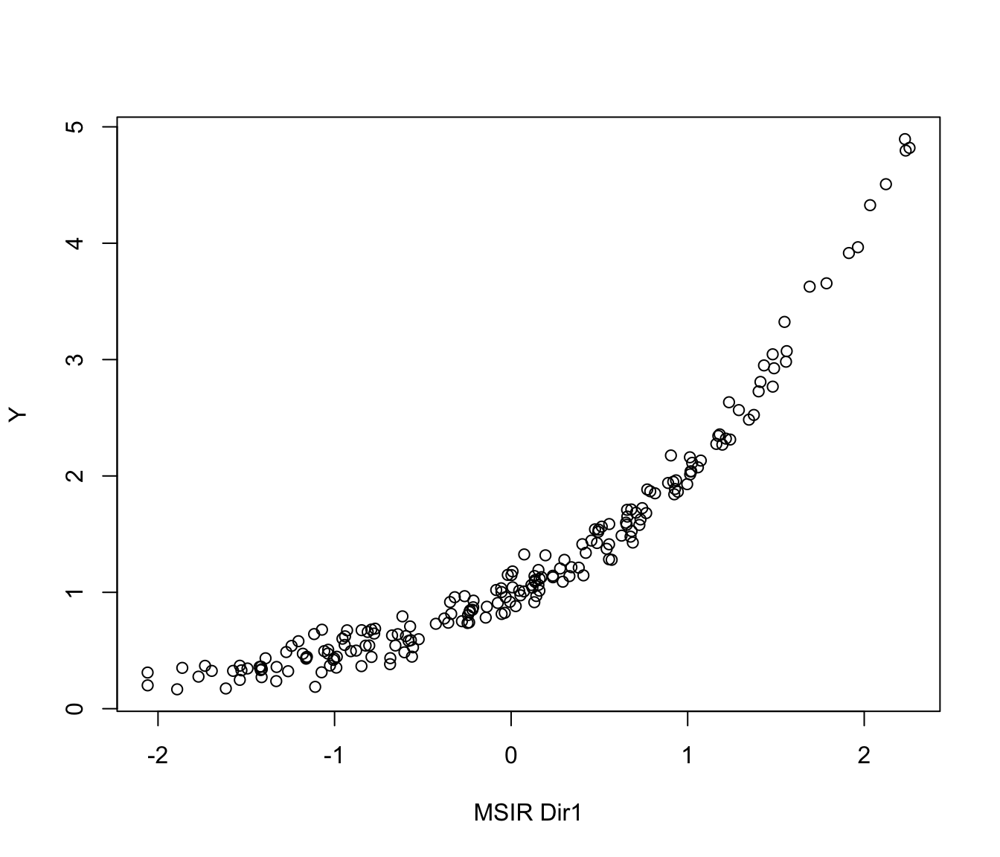
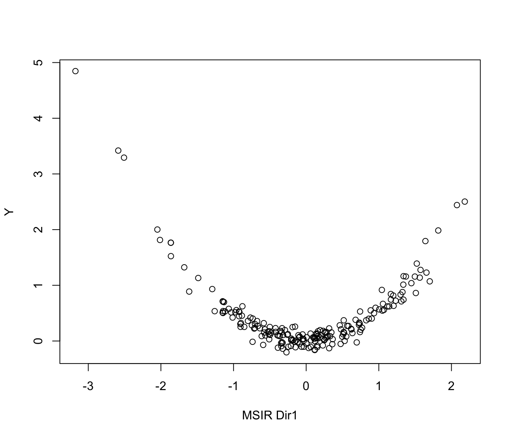
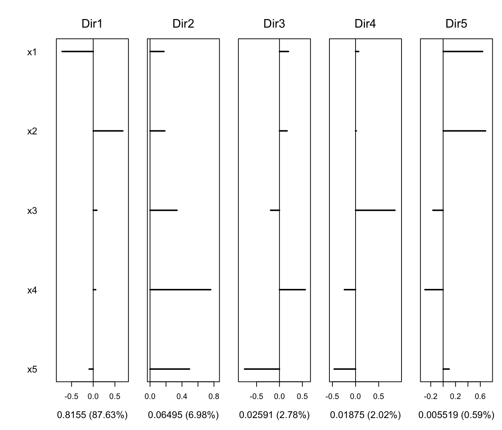
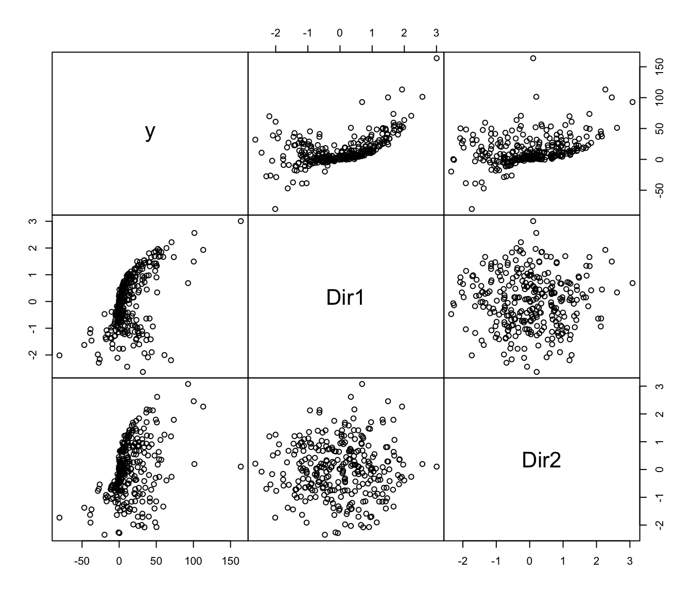
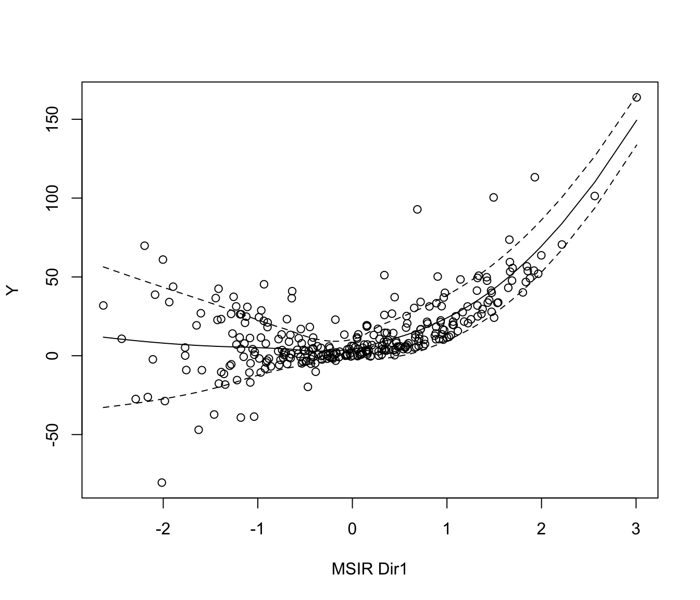
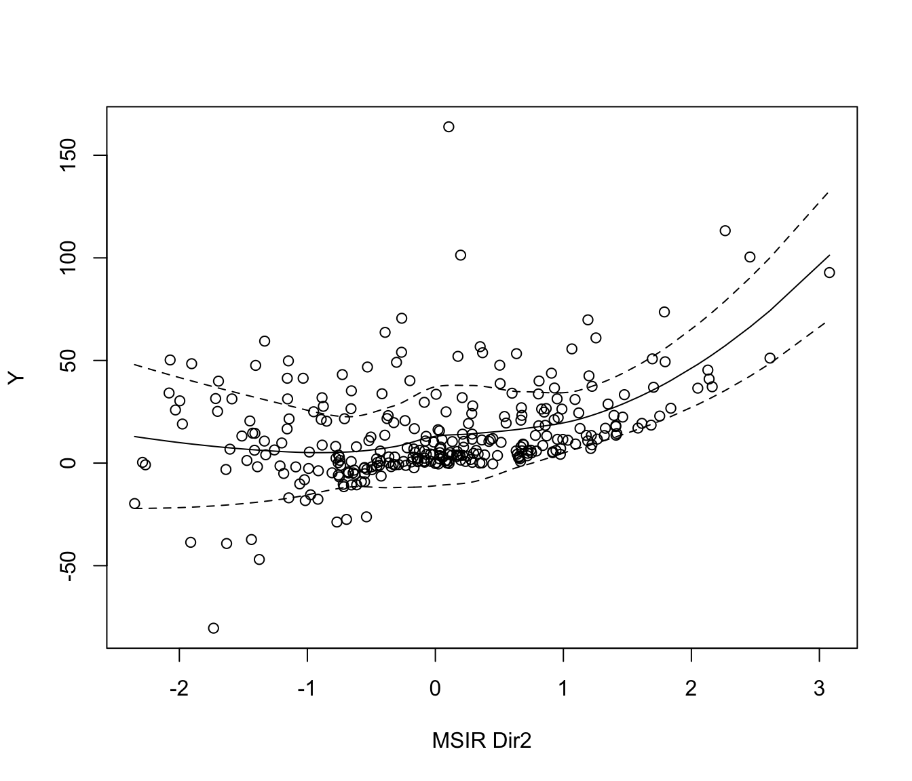

Model-based Sliced Inverse Regression (MSIR)
msir.RdA dimension reduction method based on Gaussian finite mixture models which provides an extension to sliced inverse regression (SIR). The basis of the subspace is estimated by modeling the inverse distribution within slice using Gaussian finite mixtures with number of components and covariance matrix parameterization selected by BIC or defined by the user.
Usage
msir(x, y, nslices = msir.nslices, slice.function = msir.slices,
modelNames = NULL, G = NULL, cov = c("mle", "regularized"), ...)Arguments
- x
A \((n \times p)\) design matrix containing the predictors data values.
- y
A \((n \times 1)\) vector of data values for the response variable. It can be a numeric vector (regression) but also a factor (classification). In the latter case, the levels of the factor define the slices used.
- nslices
The number of slices used, unless
yis a factor. By default the value returned bymsir.nslices.- slice.function
The slice functions to be used, by default
msir.slices, but the user can provide a different slicing function.- modelNames
A vector of character strings indicating the Gaussian mixture models to be fitted as described in
mclustModelNames. If a vector of strings is given they are used for all the slices. If a list of vectors is provided then each vector refers to a single slice.- G
An integer vector specifying the numbers of mixture components used in fitting Gaussian mixture models. If a list of vectors is provided then each vector refers to a single slice.
- cov
The predictors marginal covariance matrix. Possible choices are:
"mle": for the maximum likelihood estimate"regularized": for a regularized estimate of the covariance matrix (seemsir.regularizedSigma)R matrix: a \((p \times p)\) user defined covariance matrix
- ...
other arguments passed to
msir.compute.
Value
Returns an object of class 'msir' with attributes:
- call
the function call.
- x
the design matrix.
- y
the response vector.
- slice.info
output from slicing function.
- mixmod
a list of finite mixture model objects as described in
mclustModel.- loglik
the log-likelihood for the mixture models.
- f
a vector of length equal to the total number of mixture components containing the fraction of observations in each fitted component within slices.
- mu
a matrix of component within slices predictors means.
- sigma
the marginal predictors covariance matrix.
- M
the msir kernel matrix.
- evalues
the eigenvalues from the generalized eigen-decomposition of
M.- evectors
the raw eigenvectors from the generalized eigen-decomposition of
Mordered according to the eigenvalues.- basis
the normalized eigenvectors from the generalized eigen-decomposition of
Mordered according to the eigenvalues.- std.basis
standardized basis vectors obtained by multiplying each coefficient of the eigenvectors by the standard deviation of the corresponding predictor. The resulting coefficients are scaled such that all predictors have unit standard deviation.
- numdir
the maximal number of directions estimated.
- dir
the estimated MSIR directions from mean-centered predictors.
References
Scrucca, L. (2011) Model-based SIR for dimension reduction. Computational Statistics & Data Analysis, 55(11), 3010-3026.
Author
Luca Scrucca luca.scrucca@unipg.it
Examples
# 1-dimensional simple regression
n <- 200
p <- 5
b <- as.matrix(c(1,-1,rep(0,p-2)))
x <- matrix(rnorm(n*p), nrow = n, ncol = p)
y <- exp(0.5 * x%*%b) + 0.1*rnorm(n)
MSIR <- msir(x, y)
summary(MSIR)
#> --------------------------------------------------
#> Model-based SIR
#> --------------------------------------------------
#>
#> Slices:
#> 1 2 3 4 5 6
#> GMM XXX EEE XXX XXX XXX XII
#> Num.comp. 1 2 1 1 1 1
#> Num.obs. 33 19|14 33 33 33 35
#>
#> Estimated basis vectors:
#> Dir1 Dir2 Dir3 Dir4 Dir5
#> x1 0.7219935 0.389074 -0.205529 0.448680 -0.091528
#> x2 -0.6918887 0.433016 -0.140215 0.493288 -0.047850
#> x3 0.0007094 0.084312 -0.557143 -0.488476 -0.709084
#> x4 -0.0032952 -0.164470 -0.792163 0.064003 0.637674
#> x5 0.0020241 -0.791808 -0.012925 0.559150 -0.282675
#>
#> Dir1 Dir2 Dir3 Dir4 Dir5
#> Eigenvalues 0.92735 0.23807 0.044107 0.0099962 1.0582e-03
#> Cum. % 75.97589 95.48073 99.094330 99.9133006 1.0000e+02
plot(MSIR, type = "2Dplot")

# 1-dimensional symmetric response curve
n <- 200
p <- 5
b <- as.matrix(c(1,-1,rep(0,p-2)))
x <- matrix(rnorm(n*p), nrow = n, ncol = p)
y <- (0.5 * x%*%b)^2 + 0.1*rnorm(n)
MSIR <- msir(x, y)
summary(MSIR)
#> --------------------------------------------------
#> Model-based SIR
#> --------------------------------------------------
#>
#> Slices:
#> 1 2 3 4 5 6
#> GMM EEV XXX XII XII EEE EEI
#> Num.comp. 2 1 1 1 2 2
#> Num.obs. 15|18 33 33 33 20|13 12|23
#>
#> Estimated basis vectors:
#> Dir1 Dir2 Dir3 Dir4 Dir5
#> x1 -0.708829 0.17680 0.20170 0.068499 0.62996
#> x2 0.692961 0.19298 0.17583 0.016705 0.69655
#> x3 0.081215 0.33723 -0.19565 0.856048 -0.16056
#> x4 0.055268 0.76849 0.57715 -0.246608 -0.28954
#> x5 -0.087842 0.47666 -0.74633 -0.448770 0.09138
#>
#> Dir1 Dir2 Dir3 Dir4 Dir5
#> Eigenvalues 0.81547 0.064952 0.025907 0.018752 5.5187e-03
#> Cum. % 87.62849 94.608031 97.391949 99.406974 1.0000e+02
plot(MSIR, type = "2Dplot")

plot(MSIR, type = "coefficients")

# 2-dimensional response curve
n <- 300
p <- 5
b1 <- c(1, 1, 1, rep(0, p-3))
b2 <- c(1,-1,-1, rep(0, p-3))
b <- cbind(b1,b2)
x <- matrix(rnorm(n*p), nrow = n, ncol = p)
y <- x %*% b1 + (x %*% b1)^3 + 4*(x %*% b2)^2 + rnorm(n)
MSIR <- msir(x, y)
summary(MSIR)
#> --------------------------------------------------
#> Model-based SIR
#> --------------------------------------------------
#>
#> Slices:
#> 1 2 3 4 5 6 7 8
#> GMM EVI EVE XXI XII XII EEV EVE XXI
#> Num.comp. 2 2 1 1 1 2 3 1
#> Num.obs. 28|14 8|34 42 42 42 23|19 25|8|9 6
#>
#> Estimated basis vectors:
#> Dir1 Dir2 Dir3 Dir4 Dir5
#> x1 -0.017244 0.997294 0.071261 0.030595 -0.044267
#> x2 0.701035 0.013392 -0.573251 0.088546 0.359170
#> x3 0.707355 0.040611 0.576675 -0.032910 -0.545874
#> x4 -0.023035 0.022934 -0.568998 -0.472186 -0.634173
#> x5 0.085857 0.055234 0.099960 -0.875889 0.410955
#>
#> Dir1 Dir2 Dir3 Dir4 Dir5
#> Eigenvalues 0.66211 0.51133 0.16208 0.060535 0.028677
#> Cum. % 46.47272 82.36216 93.73836 97.987231 100.000000
plot(MSIR, which = 1:2)

if (FALSE) plot(MSIR, type = "spinplot") # \dontrun{}
plot(MSIR, which = 1, type = "2Dplot", span = 0.7)

plot(MSIR, which = 2, type = "2Dplot", span = 0.7)
